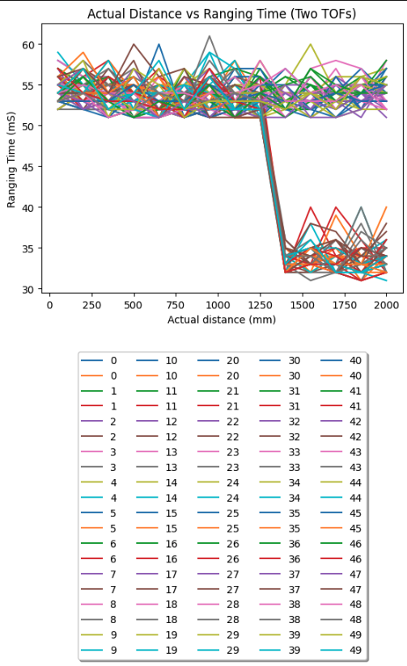

Lab 3
Objective:
In this lab, I learned to manipulate, send, receive, and visualize data streams from multiple TOF sensors. In doing so, I exercised soldering skills, read datasheets, and improved the speed of parsing on-vehicle sensor streams with low delay over BLE.
TOFs:
The rationale for having 2 TOF sensors is to thoughtfully place them in such a manner as to maximise driving capabilities. I initially narrowed my approach to either both TOFs mounted at the front of the vehicle, and to drive in a slalom/sweeping motion, or to place one in front and one pointed perpendicular to travel out of one side. I have opted for the second approach as it would be less complicated to enable straight-line obstacle avoidance (likely the most common use case for the TOFs), and for more effective localization and mapping. However, given the narrow field of view of the TOFs, 27 degrees as per the datasheet, this placement is vulnerable to obstacles outside this angle either vertically or horizontally.
Wiring:
The wiring of the system is straightforward, with the two TOF sensors sharing 3.3V, GND, and the I2C lines SDA and SCL through a Qwiic multiport through to the Qwiic connector on the Artemis Nano. In order to interact with both TOFs simultaneously, I also wired their XSHUT pins to A1 and A2 respectively on the Nano, such that I could temporarily take one TOF off the I2C lines in order to change the other’s address to be non-identical. Below is a crude wiring diagram for the system. Unused pins have not been labelled.
Below is an image of the complete system.
Tasks:
I2C:
Running the Wire_I2C example script, I found both the TOF sensors to have the same I2C address of 0x29. While this was different to the 0x52 default in the data sheet, this likely the consequence of a single bit shift in the communication protocol. As explained above, the solution to working both simultaneously is to change the address of one in setup.
Single TOF Sensor Mode Testing:
I chose to test the sensor mode ‘DistanceShort’, with a maximum expected range of 1.3 metres. I chose this for two reasons. Firstly, I believe having a high degree of accuracy within this range would be essential to optimal obstacle avoidance as, given the small and agile nature of the robot, manoeuvres can be made closer to obstacles than less agile robots. The more important reason was the datasheet’s claim that this mode is far more resilient to changing ambient light conditions than its alternatives. This is important as we may not always have the ability to adjust ambient lighting, in a common workspace or outdoors for example. The datasheet claims the maximum viewable distance for the short distance mode TOFs in dark and under strong ambient light is roughly equal at ~135cm, whereas the medium and long distance drop off massively from 290cm to 76cm and 360cm to 73cm. While in some conditions these would offer greater localisation capabilities, this level of variability would be difficult to account for in all situations, and thus is best avoided.

I tested the sensor mode for both its claims of maximum distance, and resilience to ambient light. I also tested the ranging time and repeatability under changing measured distance to determine what effect the mode would have on sampling delay. To test, I placed a measuring tape on the floor, leading up to a flat panel on one end, and the system mounted sturdily on a perpendicular mobile surface on the other end. By taking 50 samples at a given distance, then moving 15 centimetres closer/further from the flat panel, I collected data on a single TOF sensor at 14 distances from 5 centimetres to 200 centimetres inclusive. By relaying through bluetooth, I would be able to parse and visualise the data in a Jupiter Notebook using Numpy and Matplotlib.

To script this, I made a new command that read 50 TOF samples, relayed them individually to the Jupiter Notebook for parsing, then gave me 10 seconds to move the system to the next distance marker. Repeating 14 times, this allowed all my data to be collected in under 5 minutes. Below are snippets of the code to read TOF data (newReading()), send data (sendReading()) , and grant time for moving the setup (readAndSend50TOF()).


The results are summarised in the graphs below. While the legend isn’t very clear, the graph is telling. Up to ~1500 milimeters, in strong ambient light conditions, all 50 distance samples are highly similar and accurate to the true distance. After that point, the samples become more variable, and diverge slightly more from the ground truth. The maximum standard deviation for any distance was 1800mm with 32mm of deviation. I conclude this sensor is usable up to the measured 200 centimetres in most situations. The ranging time was as expected, with an average of ~53mS up to ~1350 millimeters , when it became a much quicker ~32mS. This is most likely a function of the precision sampling being done in the short distance mode up to that distance, as prescribed in the datasheet.


The dark testing is similar, with a non-negligible increase in the tightness of sampling at longer distances, accurate up to ~1750 millimetres as opposed to the ~1500 millimetres in the light testing. The number of samples taken decreased the likelihood this was the result of an experimental error, and hence I find the sensor functions more accurately and repeatably in the dark than under strong ambient light. The ranging times were effectively the same as in ambient light testing.


Two TOF Sensor Testing:
As explained prior, the method to use both TOFs at once, is to drive the XSHUT pin on one low while the other has its I2C address changed. We can then address them both individually and concurrently. I changed the address of one to 0x32, on guidance from TA Anya’s former lab3 page. Wiring as per the diagram from earlier, and placing pointing perpendicularly as they will on the car, I repeated the experiment structure from earlier under strong ambient light to produce the following graphs:


We see that while the distance from the front sensor was being uniformly increased, the proximity to my bed and a walkway caused the other TOF to read varying distances, again very precisely within the aforementioned range. In order to account for the additional TOF sensor, I simply amended the script read, send, and parsing scripts on both ends as follows:


Two TOF Speed:
In order to maximise the rate of execution for the two TOFs, I changed the Artemis-side script to avoid the busy wait condition during ranging given in the example script. Instead, I simply run the checkForDataReady() method of the distanceSensor class on each sensor, and poll for new samples. As shown below, there were many iterations of the loop when neither sensor had a new sample, and so only the timestamp was printed. From this we see the execution time of the loop was ~7 mS, with a new pair of sensor readings approximately every ~50 mS separated by ~15mS. I believe the current limiting factor in the speed of this loop is the checkForDataReady function itself, and the time it takes to Serial print the current time/ new samples. I conclude this as there are no other lines in the loop that could consume excess time.

Two TOF Readings:
The benefit of the new reading method for the two TOFs is that data can be collected relatively asynchronously, and not halt the script in between. Changing the data sent from the Artemis to the Notebook to include current time rather than ranging time, and simplifying the visualisation script, yielded this graph: